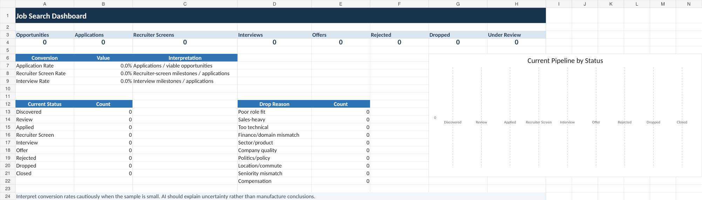

1
Download starter
Download the starter
Starter pack cuma berisi SYSTEM.md dan JOB_TRACKER.xlsx.
The starter pack only contains SYSTEM.md and JOB_TRACKER.xlsx.
Sistem file-based yang membantu AI mencari lowongan, menilai fit, menjaga tracker, mengecek link yang lo temukan sendiri, dan mencari recruiter — sementara keputusan APPLY / DROP / HOLD tetap di tangan lo.
A file-based workflow that helps AI discover jobs, evaluate fit, maintain a tracker, verify links you find yourself, and identify recruiters — while you keep final APPLY / DROP / HOLD control.
Starter pack cuma berisi SYSTEM.md dan JOB_TRACKER.xlsx.
The starter pack only contains SYSTEM.md and JOB_TRACKER.xlsx.
Tambahkan dua file tadi + salinan CV terbaru yang sudah disanitasi.
Add both files plus a sanitized copy of your latest CV.
AI akan onboarding, minta approval, lalu membuat USER_CONTEXT.md untuk lo upload balik.
The AI will onboard you, ask for approval, then generate USER_CONTEXT.md for you to add back.
Lo nggak perlu ngerti file routing atau spreadsheet. Sistemnya yang urus itu.
You do not need to understand file routing or spreadsheets. The system handles that.
Cari lowongan untuk saya.
Find jobs for me.
Review lowongan ini: [link].
Review this job: [link].
Saya sudah apply yang ini.
I applied to this one.
Cari recruiter atau hiring manager-nya.
Find the recruiter or hiring manager.
Tampilkan dashboard tracker saya.
Show my job-search dashboard.
Daily use tetap lewat chat, tapi spreadsheet-nya terbuka kalau lo pengen lihat raw pipeline, contacts, activity, dan dashboard.
Daily use stays conversational, but the spreadsheet remains available if you want to inspect the raw pipeline, contacts, activity, and dashboard.

Project ini sengaja file-based dan auditable. Tidak ada executable, installer, extension, API key, OAuth, plugin wajib, background process, atau telemetry.
The project is intentionally file-based and auditable. There are no executables, installers, extensions, API keys, OAuth, mandatory plugins, background processes, or telemetry.
Download, inspect, lalu pakai kalau workflow-nya masuk akal buat lo.
Download it, inspect it, and use it if the workflow makes sense for you.